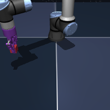
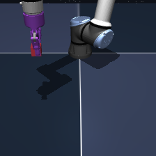
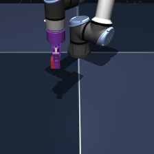
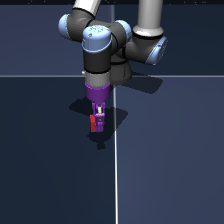

Overview
LeWorldModel (LeWM) is a world model framework that can very efficiently learn environment dynamics directly from pixels in resource-constrained settings. With this work we explore whether integrating 3D data into LeWM can significantly improve physical reasoning capabilities on well-known benchmarks. We compare multiple depth-based input modalities against the original RGB baseline.
Research question
Does adding depth-based information to an RGB-based world model improve its latent physical reasoning and prediction benchmarking scores?
Method
1. Train LeWorldModel on 3D data
We extend LeWorldModel (LeWM) on the OGBench single-cube manipulation task to investigate how depth-based geometric information affects learned world-model representations and planning. Starting from the original RGB observations, we generate separate datasets with alternative depth-based inputs: these include ground-truth depth obtained from the simulation environment (MuJoCo), depth maps estimated from RGB via Depth-Anything-3 (DA3), as well as derived geometric representations such as normal maps and point maps. Depth maps are clipped to [0.5,3.0]m and normalized before being passed to the visual encoder. The original LeWM architecture and training objective are retained, allowing us to isolate the effect of the input representation.
2. Evaluation
We evaluate each depth-based modality configuration along two dimensions. Representation quality is assessed by training linear probes on frozen image latents to predict physical state variables, such as cube position, cube rotation, gripper position, or cube rotation. Planning performance is evaluated using LeWM's goal-conditioned model predictive control with a Cross-Entropy Method (CEM) solver. We report success rates over 1,000 fixed validation source-goal pairs, defining success as placing the cube within 4 cm of the target.

t = 0 Source
t = 15
t = 30
t = 45 TargetResults
The results show that depth-based inputs actually fail to provide a strong, consistent improvement over RGB in either latent probing or planning. Representation quality varies by physical property: point maps slightly improve cube-position prediction, RGB+D improves end-effector-position prediction, and surface normals perform best for joint velocity. However, rotation-related properties remain poorly encoded, particularly end-effector yaw. Depth preprocessing strategies also yield only minor differences, suggesting that simply adding geometric information is insufficient to improve the learned representations or planning performance.
Limitations: The encoder appears to prioritize translational dynamics while underrepresenting orientation and contact-rich interactions, as the LeWM loss goes down even when ignoring the latter training signals. Qualitatively, planning often succeeds when the cube is already grasped but fails when grasping and lifting are required, suggesting that the learning objective does not sufficiently preserve manipulation-relevant geometric information, regardless of the input modality (RGB vs depth). Planning results also require cautious interpretation: some source-target pairs are already near success, and random inputs achieve approximately 42% success.
Future Work: Although LeWorldModel offers a promising framework for training world models efficiently, the current evaluation protocol may not sufficiently challenge physical reasoning and manipulation capabilities. We suggest that future work focus on: (1) more challenging planning benchmarks, (2) representation-learning objectives that explicitly preserve geometric information such as object orientation and contact dynamics, (3) evaluation protocols that better measure planning capabilities, and (4) a clearer definition of latent physical reasoning in world models.